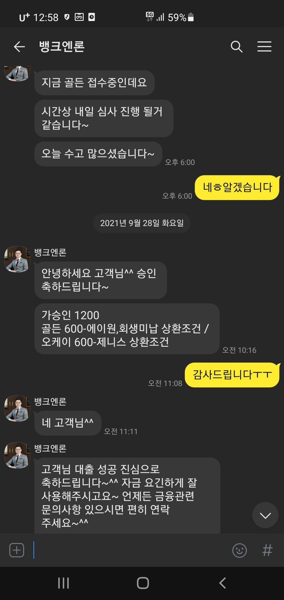

[ 개인회생자대출 ] (개인회생 대환및 생계)김용혁이사님 항상 감사드립니다

현재 재직3개월 이제 넘었고 신용점수 350점대인데다가 개인회생 변제금미납4회분 (160만원) 과 기대출 (조이 560만원 , 에이원 150만원) 대환및 생계까지 필요했었는데 뱅크엔론 김용혁 이사님덕에 너무나 큰결과를 받았습니다. 너무 고생하셨고 감사드립니다!!!

현재 재직3개월 이제 넘었고 신용점수 350점대인데다가 개인회생 변제금미납4회분 (160만원) 과 기대출 (조이 560만원 , 에이원 150만원) 대환및 생계까지 필요했었는데 뱅크엔론 김용혁 이사님덕에 너무나 큰결과를 받았습니다. 너무 고생하셨고 감사드립니다!!!